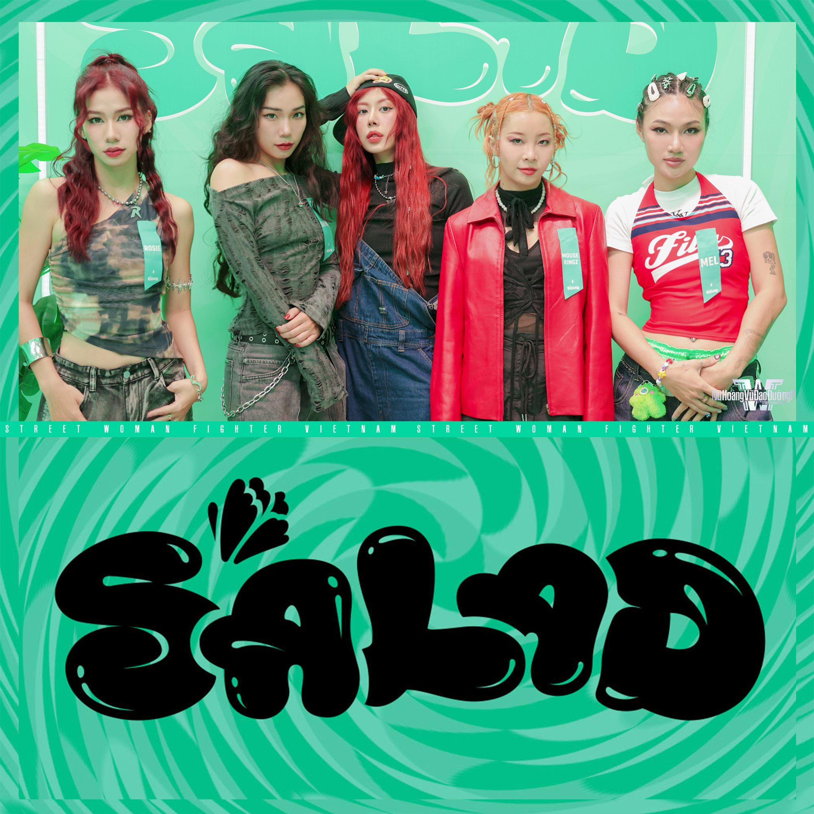
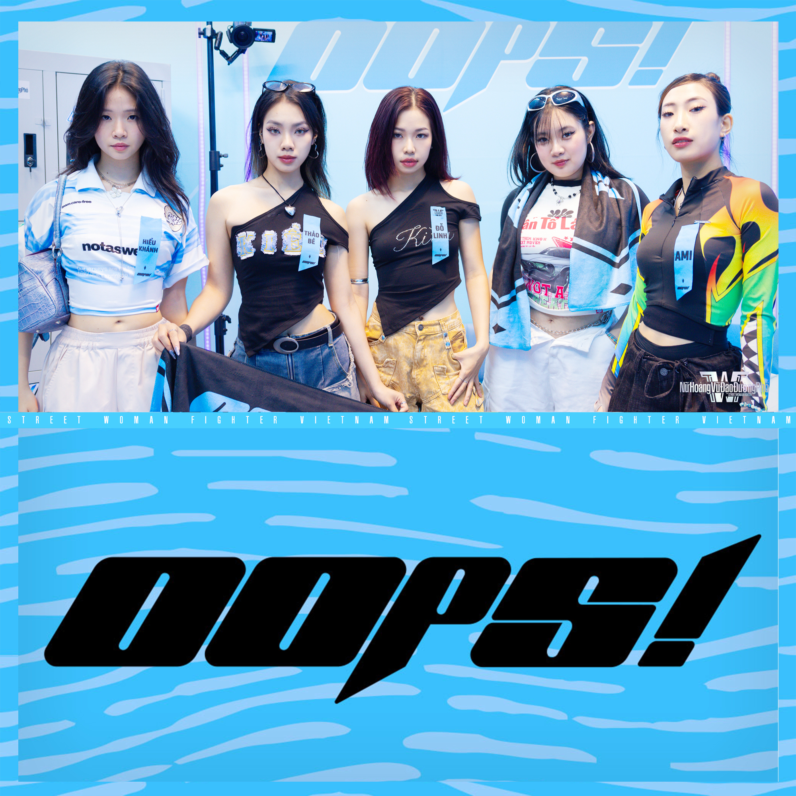
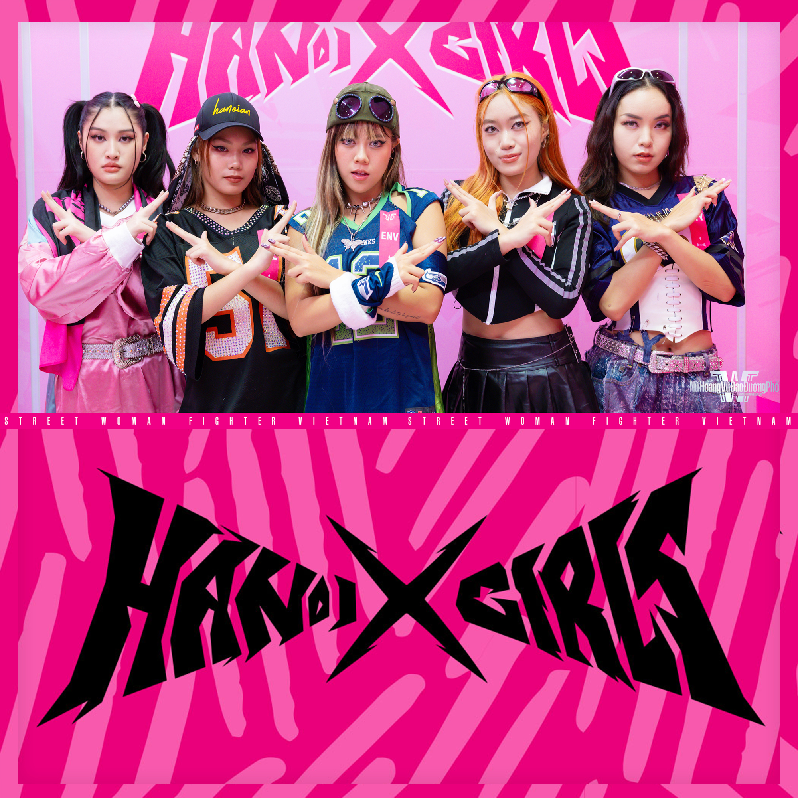
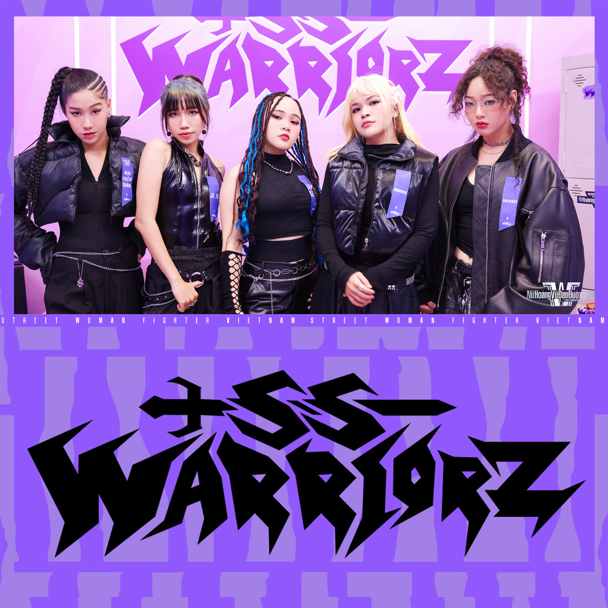
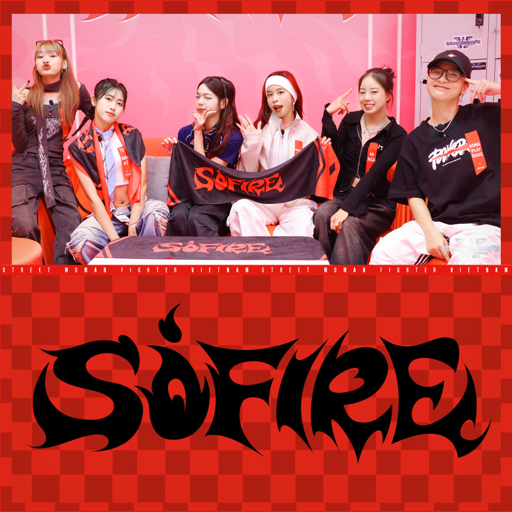

Street Woman Fighter Vietnam
Street Woman Fighter Vietnam being the first Overseas spinoff series, had a lot to live up to, and it did NOT disappoint!
Street Woman Fighter Vietnam has a very special place in my heart specifically, as being a Vietnamese person myself, I really got to see myself in the contestants! Not to mention, it in my opinion has the best judging.
List of Placements:
- F.E.D
- SoFire
- Hanoi XGirls
- Oops
- SSWarriorz
- Salad
| Crew | Placement | No Respect Challenge Results | Class Mission Results | Kpop Mission Results | Mega Crew Mission Results | Finale Results |
|---|---|---|---|---|---|---|
| F.E.D | Winner | 6W / 4L | +0 | 2nd | 1st | 1st |
| SOFIRE | Runner Up | 6W / 4L | +0 | 4th | 2nd | 2nd |
| Hanoi XGirls | 3rd | 5W / 3L | +150 | 1st | 3rd | 3rd |
| Oops! | 4th | 3W / 5L | +50 | 3rd | 4th | |
| SSWARRIORZ | 5th | 6W / 3L | +0 | 5th | 5th | |
| Salad | 6th | 3W / 10L | +0 | 6th | ||

F.E.D Crew
F.E.D Crew is a crew made in 2021, assembled of members Thanh Tú, Lu, Linh PC, Cộ, and Leader Chéc.
F.E.D Crew is easily my favorite crew to come out of the season, There's just something about them being former Hanoi XGirls Members that really is compelling, sorta giving them an Underdog Story, even if there wasn't a lot of Underdog storyline going on admittedly. Also, definitely personal bias but I think they're the coolest Crew, Second probably only to SSWARRIORZ
{kind=link}

Salad Crew
Salad Crew is a crew that was made for the show, assembled of members Rosie, MAYONAIR, Mouse Kingz, Mel, and Leader Shin.
Having MAYONAIR on the crew was such a blessing, because it really gave them such a nice underdog storyline, even if they were eliminated first. Considering their run as a whole, they really did deliver on that new fresh vibe they were going for, and still managed to hold their own against SSWARRIORZ in the elimination battle.
{kind=link}

Oops! Crew
Oops! Crew is a crew made in 2014, assembled of members Thảo Bé, Trâm Anh, Hiểu Khánh, and Leader Đỗ Linh.
Oops! Crew is honestly a very close second to being my favorite for me, despite normally only doing Kpop Covers, they really held their own against the other crews! Especially with their Mega Crew Mission, still easily my favorite performance of the season, arguably the whole series even.
{kind=link}

Hanoi XGirls
Hanoi XGirls is a crew made in 2017, assembled of members Ke, Chloe, Vergina, Kyy, and Leader EnV.
Having appeared on Asia's Got Talent before, they were definitely the crew to beat. Also were my favorite crew closer to the start of the competition, especially with their crew performance, easily the strongest opening I've seen.
{kind=link}

SSWARRIORZ
SSWARRIORZ is a crew assmebled of members Groovie, Ji.U, Balienzz, Len Len, and Leader Mai Thiên Quân.
I mentioned SSWARRIORZ being the coolest crew for a reason, being easily the strongest Crew when it comes to battling. After all, In the No Respect Challenge they ended up with 6 wins and 3 loses in total. Not to mention having to be auto eliminated via placing 5th in the mega crew mission, they weren't anything to scoff at.
{kind=link}

SOFIRE
SOFIRE is a crew that was made for the show, assembled of members Minga, Nguyen Trang, Linh Lei, BongPlayBang, Manhsohighh, and Leader Anh Mỹ.
I find SOFIRE to be a really interesting crew, being I believe the only crew to be assembled for the show, at least for that season. Consisting of members from Last Fire, OS Crew, and SpaceX, they had a lot to do to make sure they all worked well as a team. But I personally believe they definitely achieved that, getting that new and young vibe they wanted!